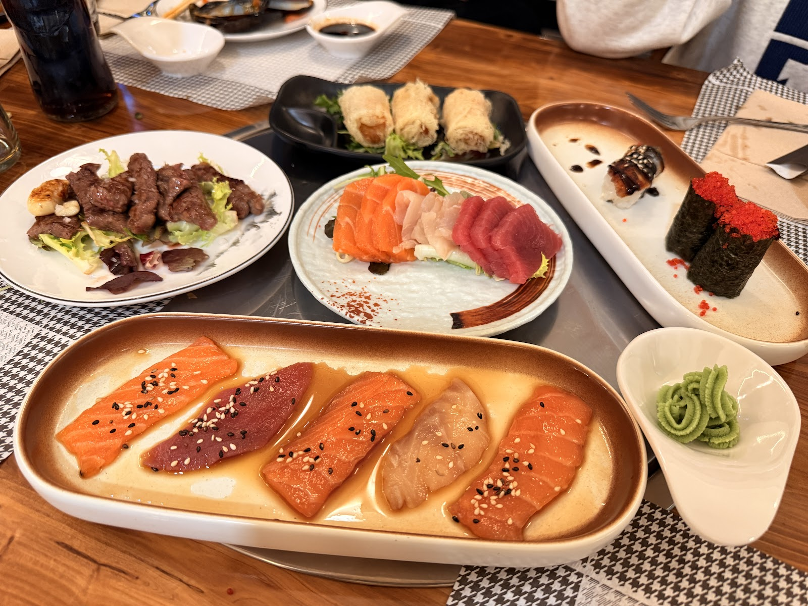
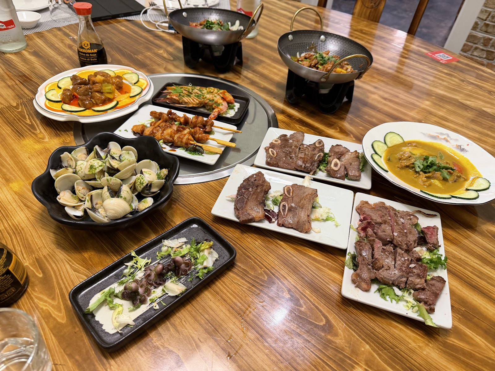
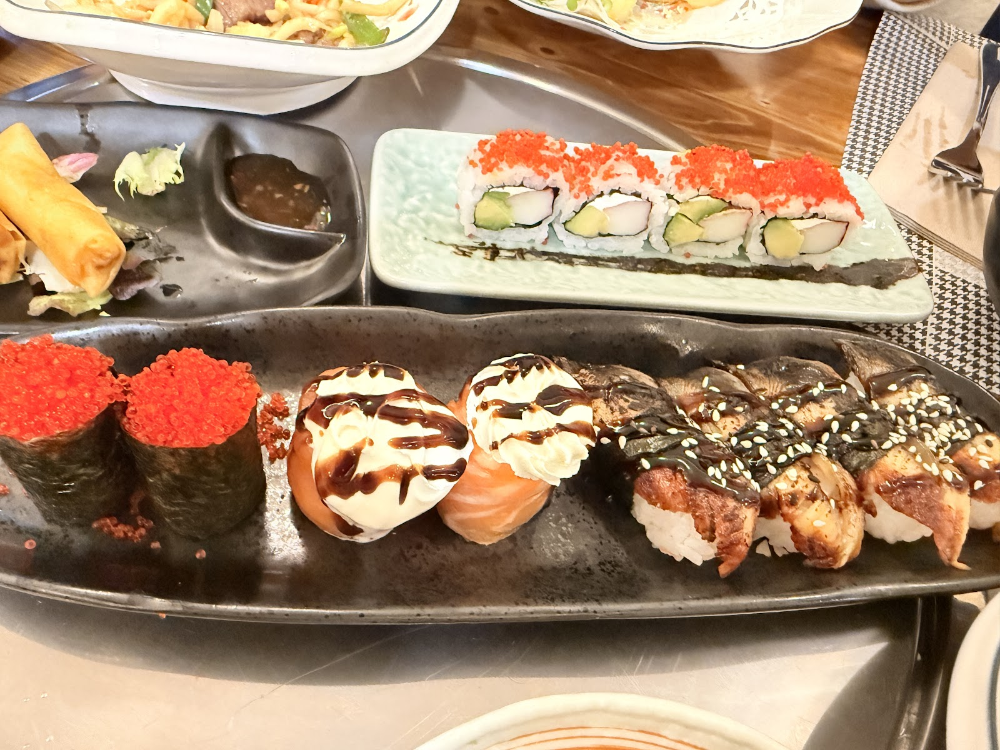
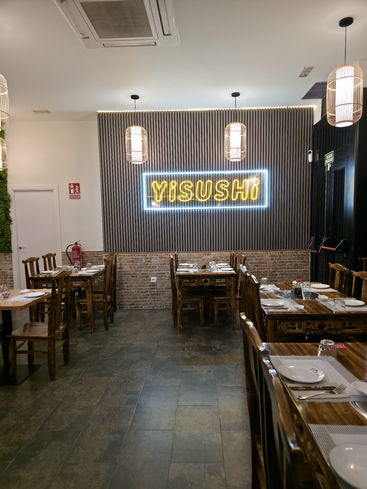
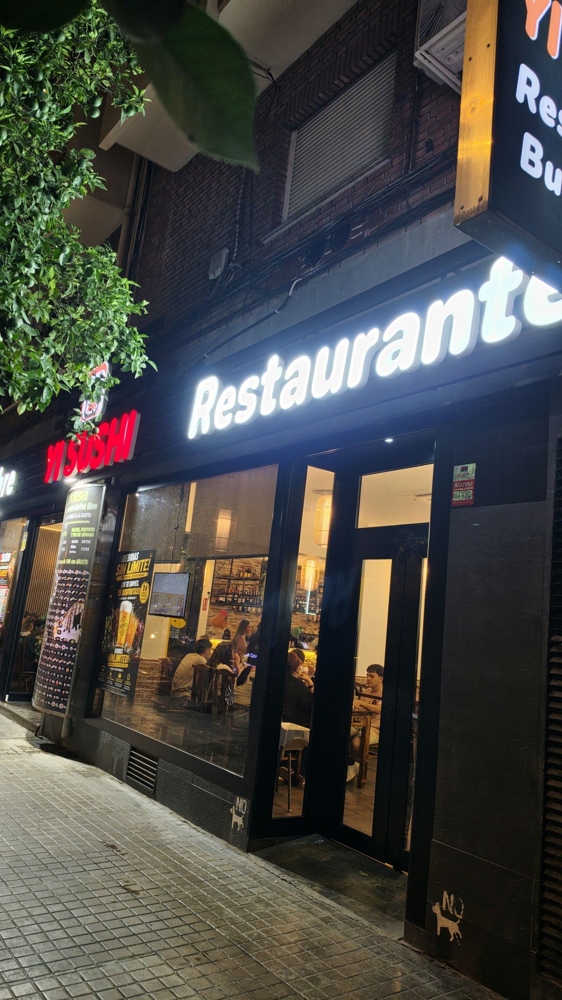
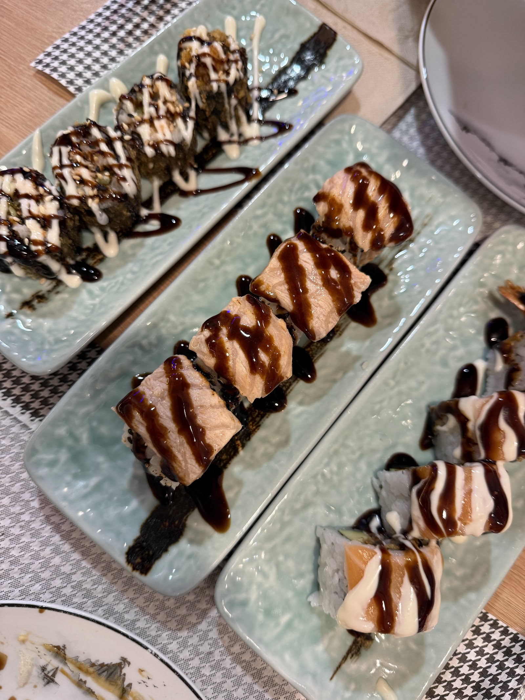

★★★★★
"Todo muy rico y el personal muy amable. Un ambiente muy agradable. Hemos repetido y lo seguiremos haciendo. Muy buen precio."
Yolanda VgHace 5 meses



Buffet y carta de cocina japonesa con producto de calidad, buen ambiente y una relación calidad-precio que enamora a Valencia entera.



En Yisushi Valencia elaboramos cada plato con esmero: una proporción equilibrada de arroz y pescado, producto fresco y una atención rápida y amable que nuestros clientes destacan una y otra vez.
Estamos en C/ de Llorca, 11, en el barrio de L'Olivereta (València). Un lugar apto para comer en pareja, en familia o en grupo, tanto para comer como para cenar.
Todo lo que necesitas saber para venir a comer o cenar con nosotros.
C/ de Llorca, 11, L'Olivereta
46018 València, Valencia
Llama o reserva online, lo que te resulte más cómodo.
Fotografías compartidas por nuestros propios clientes en Google Maps.
Fotos y atribuciones cortesía de los usuarios de Google Maps.
★★★★★ 4.7 sobre 5 · 358 reseñas en Google Maps
"Todo muy rico y el personal muy amable. Un ambiente muy agradable. Hemos repetido y lo seguiremos haciendo. Muy buen precio."
"Buena calidad del producto. Proporción muy equilibrada de arroz y pescado, y atención inmejorable."
"Comida buenísima y con una gran presentación. Servicio rápido y amable. Encima más económico que otros de peor calidad, realmente recomendable."
"He probado muchos buffets en Valencia y realmente este es un 20/10. Buena calidad-precio, los platos elaborados y se nota que están hechos con mucho esmero y amor."
"He ido solo a cenar, la atención fantástica, me ha recibido una chica muy maja. La comida muy buena. Recomiendo ir definitivamente."
Estamos a un paso, ven a probar nuestra cocina japonesa.
C/ de Llorca, 11, L'Olivereta, 46018 València, Valencia
Consulta el horario completo arriba
Tarjeta de crédito, débito y pago sin contacto (NFC)
Elige día y hora desde nuestro sistema de reservas online o llámanos directamente.